fabrics 32 images
 krea 2
krea 2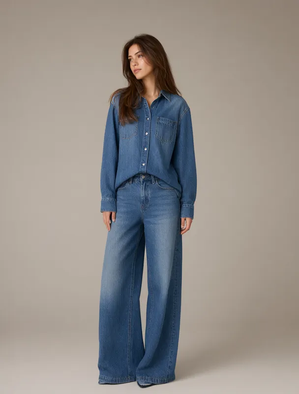
qwen image 2.1denim
a full color fashion photograph in three-quarter view, a three-quarter length shot from the head to mid-thigh, lit by soft even studio light against a plain warm gray backdrop. the subject is a slim mixed race woman of about twenty five with light skin. her hair is chestnut brown, long blowout layers. she wears a matching button-up shirt and wide-leg trousers made of denim. she stands relaxed, turned three quarters toward the left side of the frame, and gazes off to the left side of the frame, away from the camera.
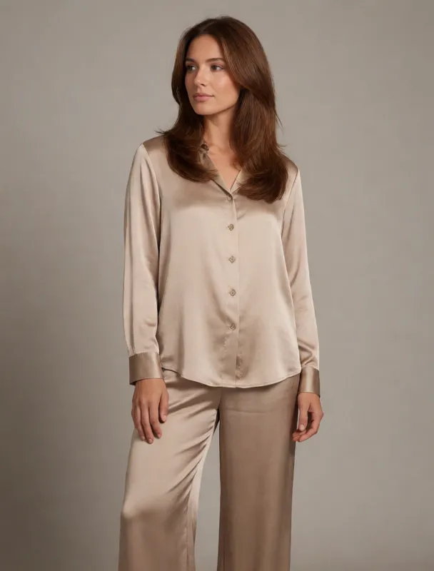
krea 2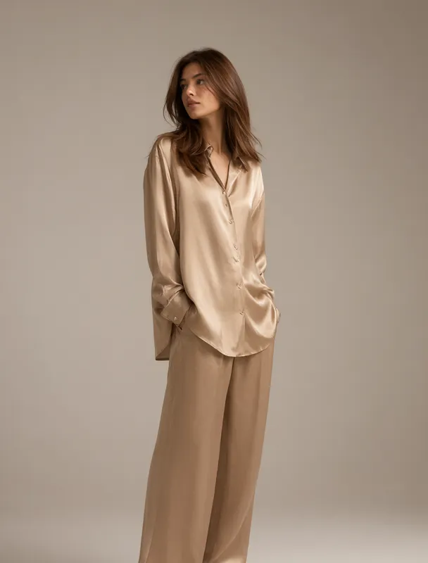
qwen image 2.1silk satin
a full color fashion photograph in three-quarter view, a three-quarter length shot from the head to mid-thigh, lit by soft even studio light against a plain warm gray backdrop. the subject is a slim mixed race woman of about twenty five with light skin. her hair is chestnut brown, long blowout layers. she wears a matching button-up shirt and wide-leg trousers made of silk satin. she stands relaxed, turned three quarters toward the left side of the frame, and gazes off to the left side of the frame, away from the camera.
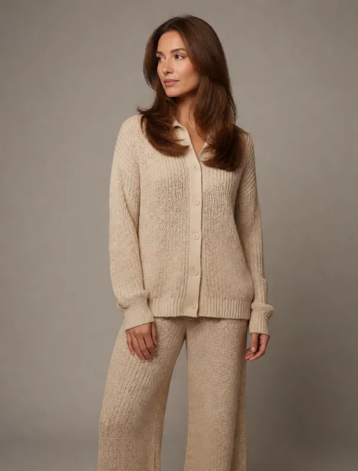
krea 2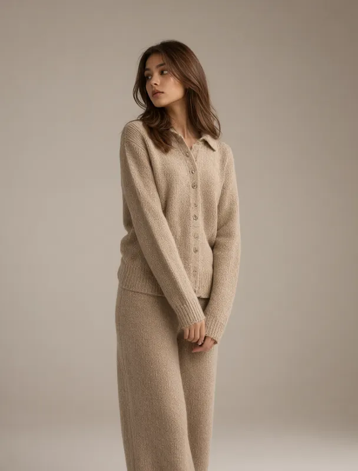
qwen image 2.1chunky knit
a full color fashion photograph in three-quarter view, a three-quarter length shot from the head to mid-thigh, lit by soft even studio light against a plain warm gray backdrop. the subject is a slim mixed race woman of about twenty five with light skin. her hair is chestnut brown, long blowout layers. she wears a matching button-up shirt and wide-leg trousers made of chunky knit. she stands relaxed, turned three quarters toward the left side of the frame, and gazes off to the left side of the frame, away from the camera.
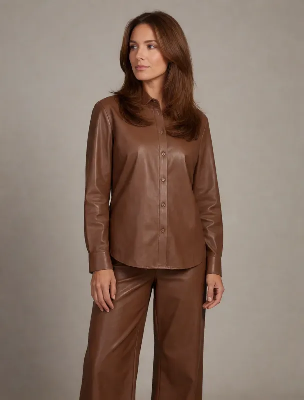
krea 2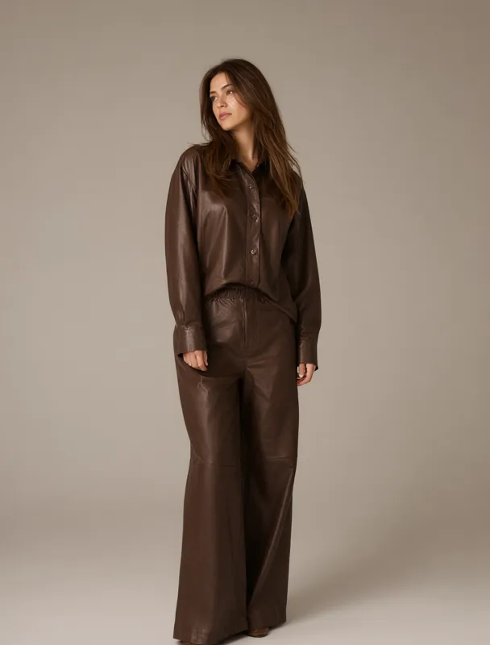
qwen image 2.1leather
a full color fashion photograph in three-quarter view, a three-quarter length shot from the head to mid-thigh, lit by soft even studio light against a plain warm gray backdrop. the subject is a slim mixed race woman of about twenty five with light skin. her hair is chestnut brown, long blowout layers. she wears a matching button-up shirt and wide-leg trousers made of leather. she stands relaxed, turned three quarters toward the left side of the frame, and gazes off to the left side of the frame, away from the camera.
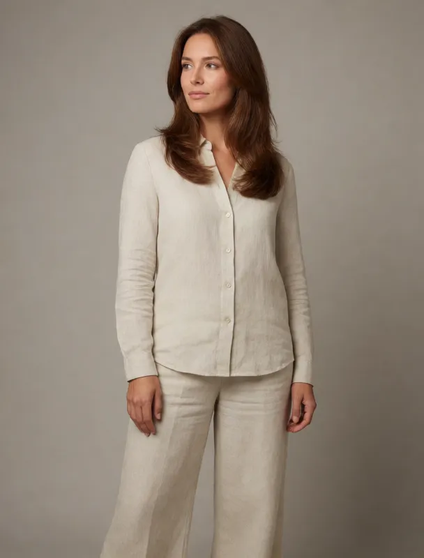
krea 2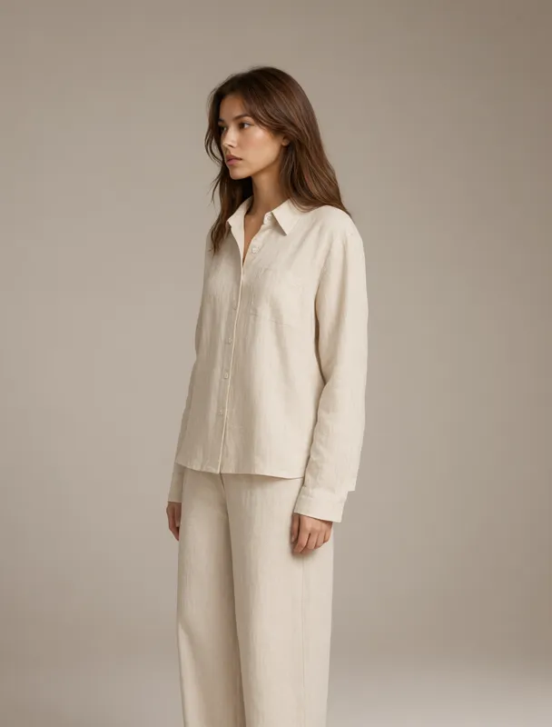
qwen image 2.1linen
a full color fashion photograph in three-quarter view, a three-quarter length shot from the head to mid-thigh, lit by soft even studio light against a plain warm gray backdrop. the subject is a slim mixed race woman of about twenty five with light skin. her hair is chestnut brown, long blowout layers. she wears a matching button-up shirt and wide-leg trousers made of linen. she stands relaxed, turned three quarters toward the left side of the frame, and gazes off to the left side of the frame, away from the camera.
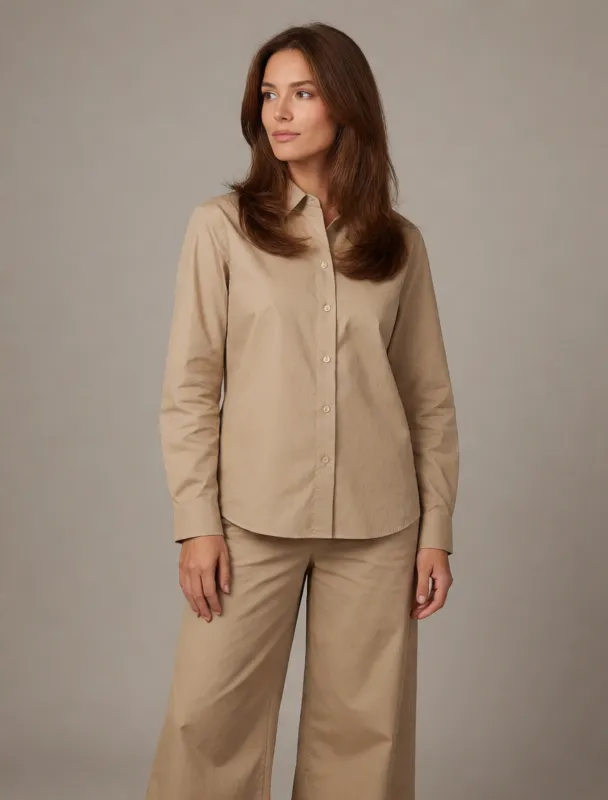
krea 2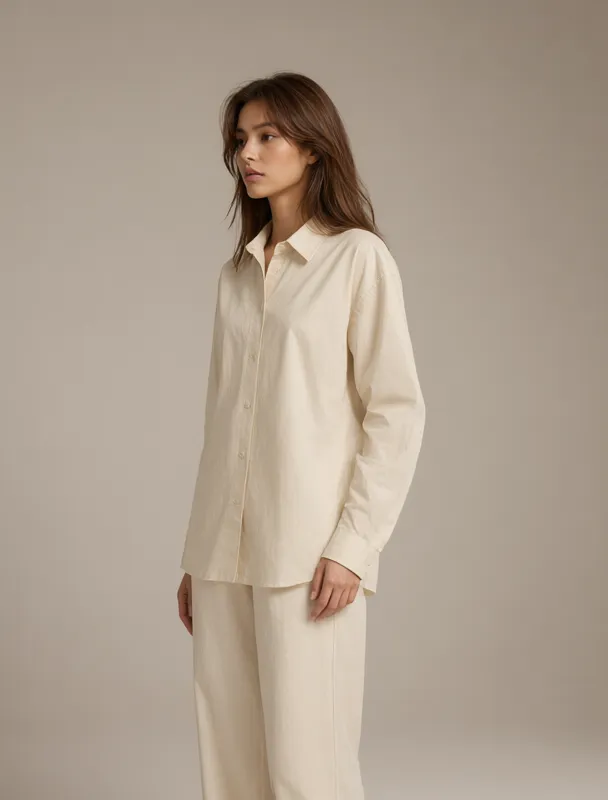
qwen image 2.1cotton poplin
a full color fashion photograph in three-quarter view, a three-quarter length shot from the head to mid-thigh, lit by soft even studio light against a plain warm gray backdrop. the subject is a slim mixed race woman of about twenty five with light skin. her hair is chestnut brown, long blowout layers. she wears a matching button-up shirt and wide-leg trousers made of cotton poplin. she stands relaxed, turned three quarters toward the left side of the frame, and gazes off to the left side of the frame, away from the camera.
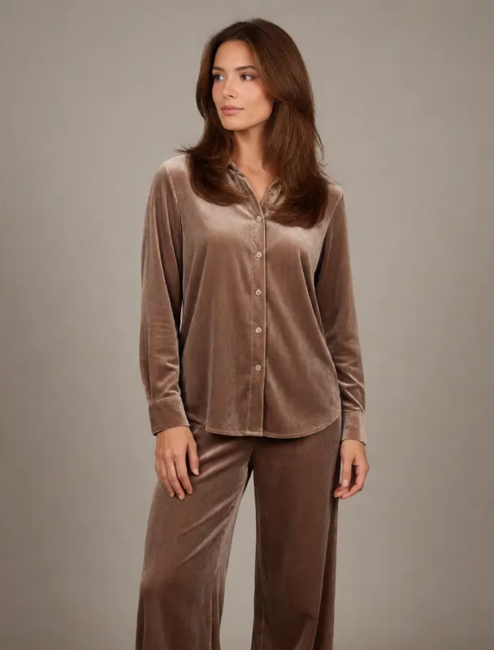
krea 2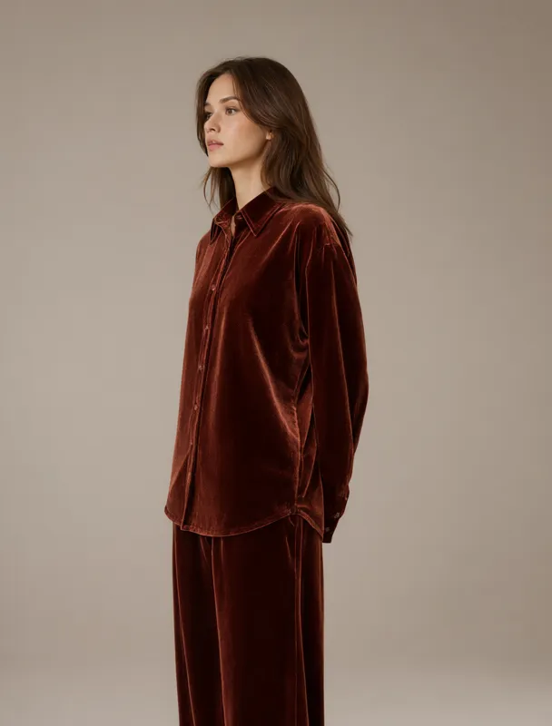
qwen image 2.1velvet
a full color fashion photograph in three-quarter view, a three-quarter length shot from the head to mid-thigh, lit by soft even studio light against a plain warm gray backdrop. the subject is a slim mixed race woman of about twenty five with light skin. her hair is chestnut brown, long blowout layers. she wears a matching button-up shirt and wide-leg trousers made of velvet. she stands relaxed, turned three quarters toward the left side of the frame, and gazes off to the left side of the frame, away from the camera.
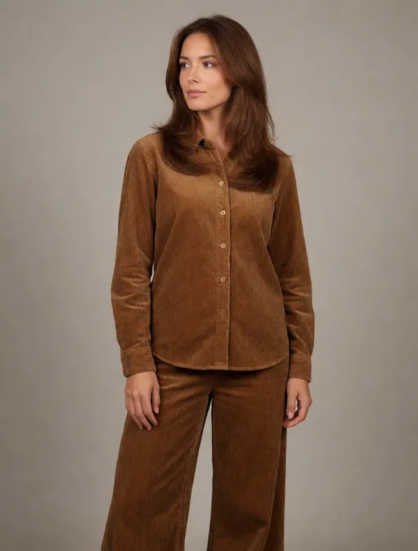
krea 2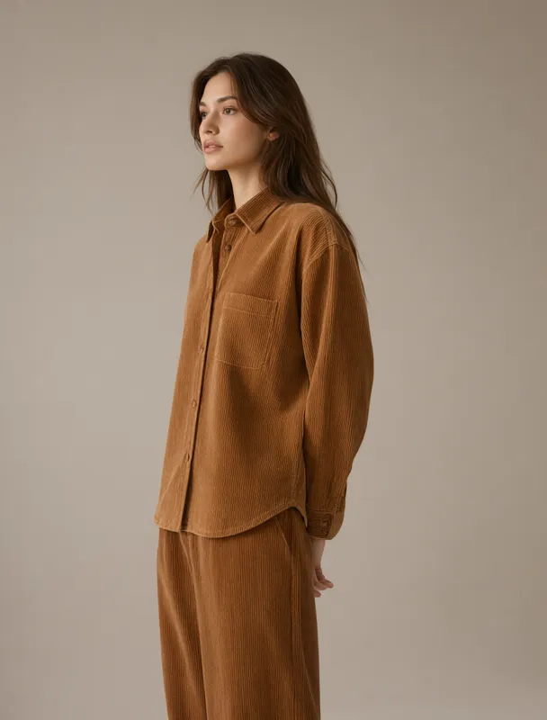
qwen image 2.1corduroy
a full color fashion photograph in three-quarter view, a three-quarter length shot from the head to mid-thigh, lit by soft even studio light against a plain warm gray backdrop. the subject is a slim mixed race woman of about twenty five with light skin. her hair is chestnut brown, long blowout layers. she wears a matching button-up shirt and wide-leg trousers made of corduroy. she stands relaxed, turned three quarters toward the left side of the frame, and gazes off to the left side of the frame, away from the camera.
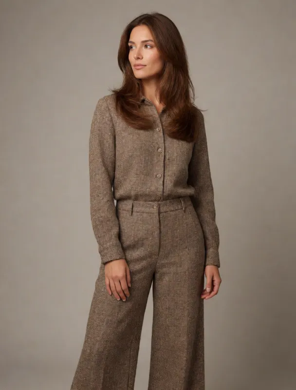
krea 2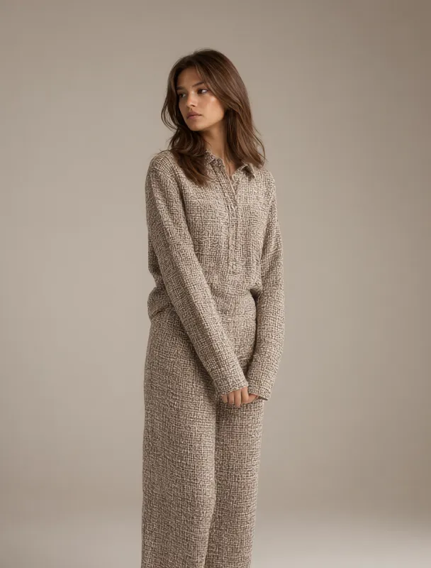
qwen image 2.1tweed
a full color fashion photograph in three-quarter view, a three-quarter length shot from the head to mid-thigh, lit by soft even studio light against a plain warm gray backdrop. the subject is a slim mixed race woman of about twenty five with light skin. her hair is chestnut brown, long blowout layers. she wears a matching button-up shirt and wide-leg trousers made of tweed. she stands relaxed, turned three quarters toward the left side of the frame, and gazes off to the left side of the frame, away from the camera.
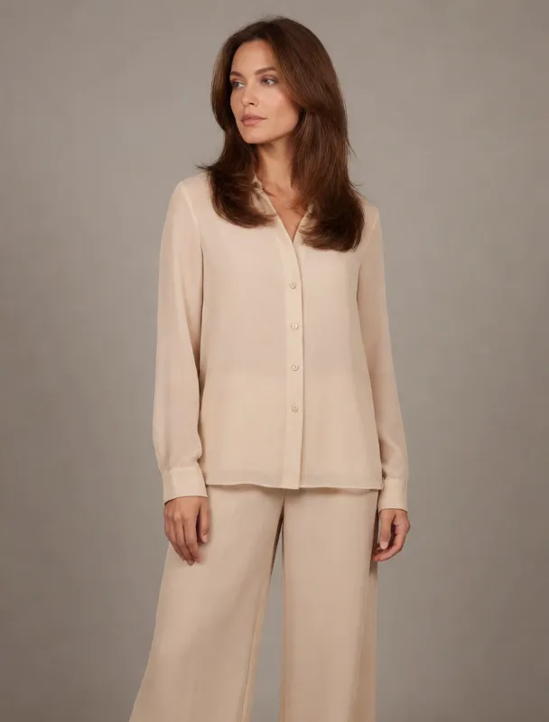
krea 2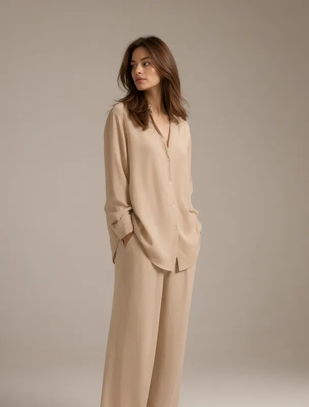
qwen image 2.1chiffon
a full color fashion photograph in three-quarter view, a three-quarter length shot from the head to mid-thigh, lit by soft even studio light against a plain warm gray backdrop. the subject is a slim mixed race woman of about twenty five with light skin. her hair is chestnut brown, long blowout layers. she wears a matching button-up shirt and wide-leg trousers made of chiffon. she stands relaxed, turned three quarters toward the left side of the frame, and gazes off to the left side of the frame, away from the camera.
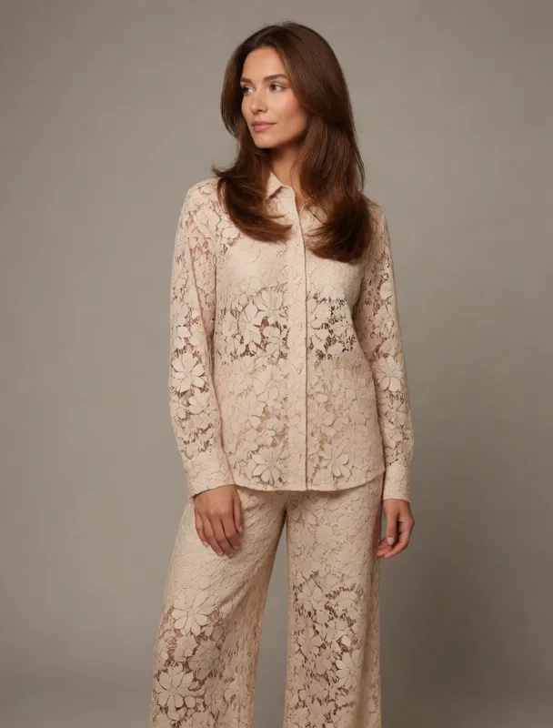
krea 2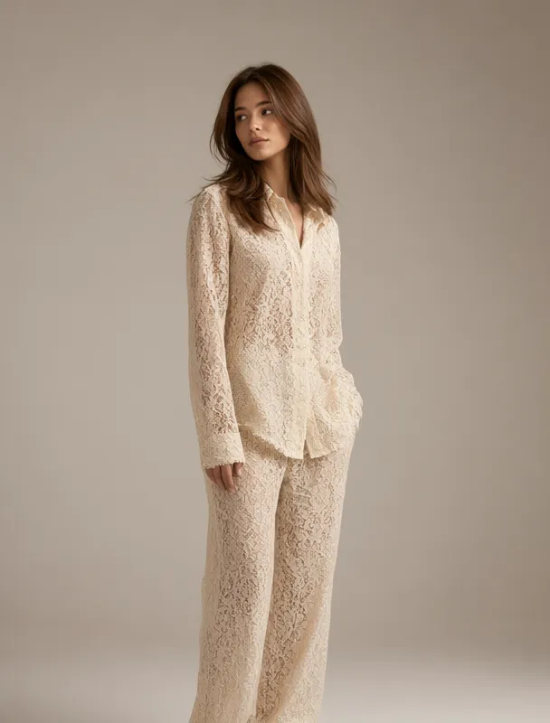
qwen image 2.1lace
a full color fashion photograph in three-quarter view, a three-quarter length shot from the head to mid-thigh, lit by soft even studio light against a plain warm gray backdrop. the subject is a slim mixed race woman of about twenty five with light skin. her hair is chestnut brown, long blowout layers. she wears a matching button-up shirt and wide-leg trousers made of lace. she stands relaxed, turned three quarters toward the left side of the frame, and gazes off to the left side of the frame, away from the camera.
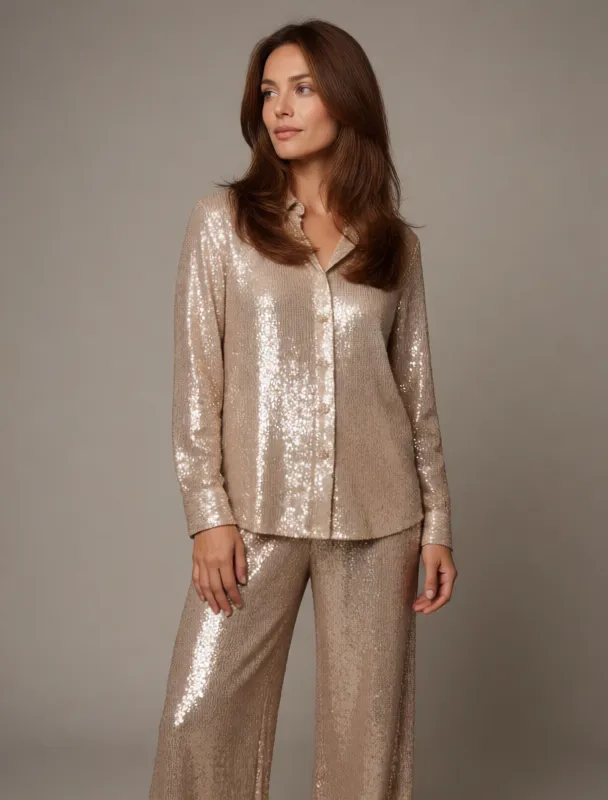
krea 2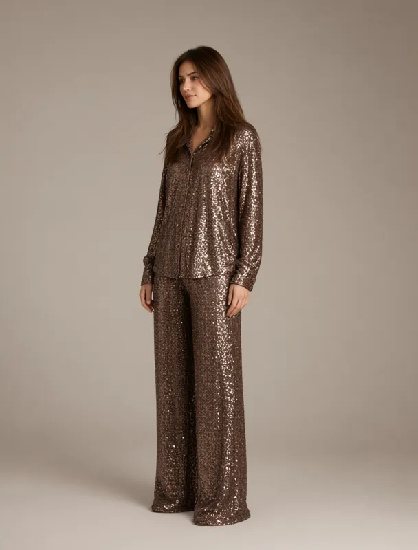
qwen image 2.1sequins
a full color fashion photograph in three-quarter view, a three-quarter length shot from the head to mid-thigh, lit by soft even studio light against a plain warm gray backdrop. the subject is a slim mixed race woman of about twenty five with light skin. her hair is chestnut brown, long blowout layers. she wears a matching button-up shirt and wide-leg trousers made of sequins. she stands relaxed, turned three quarters toward the left side of the frame, and gazes off to the left side of the frame, away from the camera.
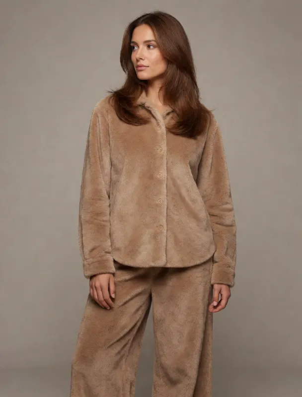
krea 2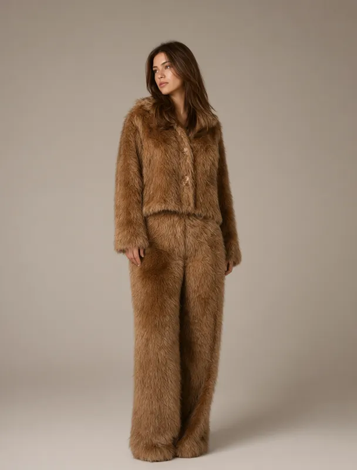
qwen image 2.1faux fur
a full color fashion photograph in three-quarter view, a three-quarter length shot from the head to mid-thigh, lit by soft even studio light against a plain warm gray backdrop. the subject is a slim mixed race woman of about twenty five with light skin. her hair is chestnut brown, long blowout layers. she wears a matching button-up shirt and wide-leg trousers made of faux fur. she stands relaxed, turned three quarters toward the left side of the frame, and gazes off to the left side of the frame, away from the camera.
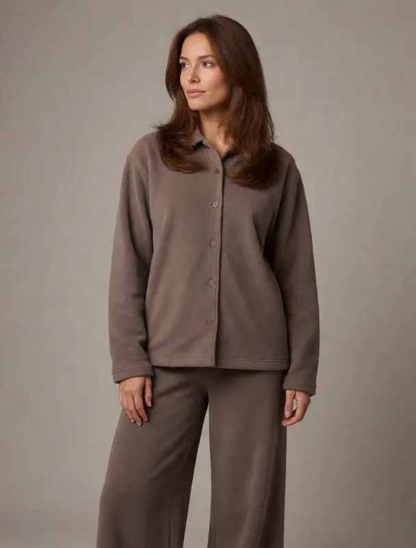
krea 2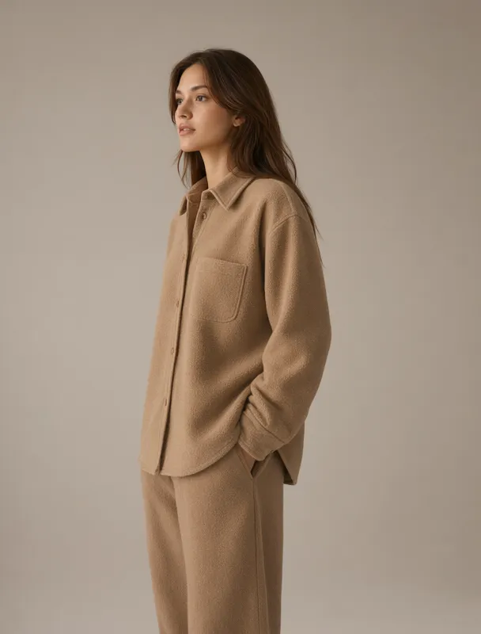
qwen image 2.1fleece
a full color fashion photograph in three-quarter view, a three-quarter length shot from the head to mid-thigh, lit by soft even studio light against a plain warm gray backdrop. the subject is a slim mixed race woman of about twenty five with light skin. her hair is chestnut brown, long blowout layers. she wears a matching button-up shirt and wide-leg trousers made of fleece. she stands relaxed, turned three quarters toward the left side of the frame, and gazes off to the left side of the frame, away from the camera.
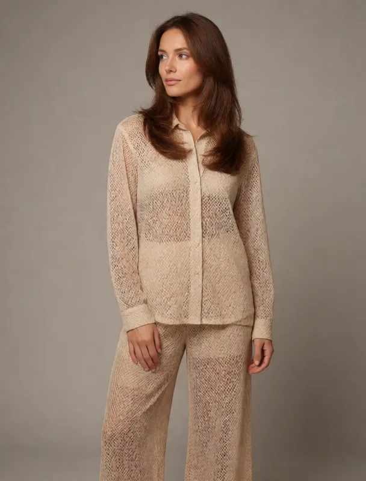
krea 2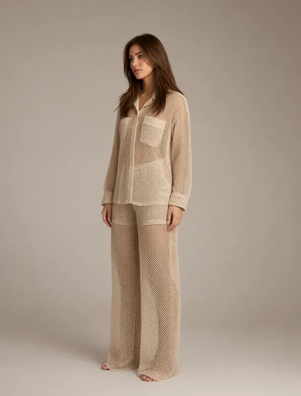
qwen image 2.1mesh
a full color fashion photograph in three-quarter view, a three-quarter length shot from the head to mid-thigh, lit by soft even studio light against a plain warm gray backdrop. the subject is a slim mixed race woman of about twenty five with light skin. her hair is chestnut brown, long blowout layers. she wears a matching button-up shirt and wide-leg trousers made of mesh. she stands relaxed, turned three quarters toward the left side of the frame, and gazes off to the left side of the frame, away from the camera.
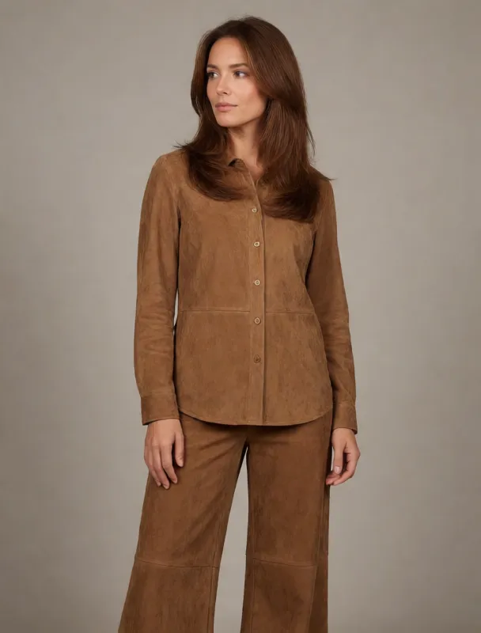
krea 2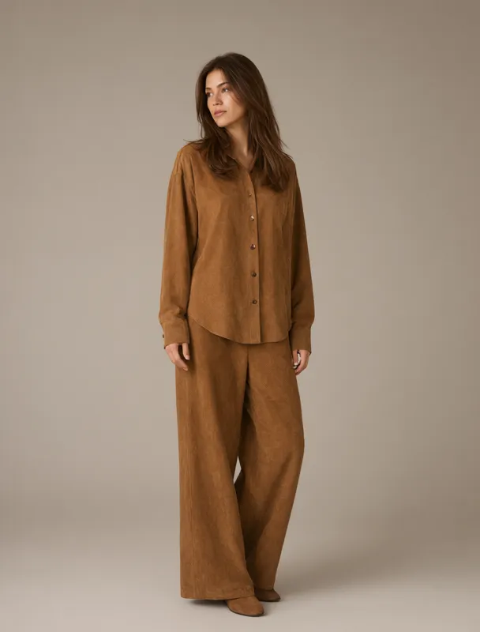
qwen image 2.1suede
a full color fashion photograph in three-quarter view, a three-quarter length shot from the head to mid-thigh, lit by soft even studio light against a plain warm gray backdrop. the subject is a slim mixed race woman of about twenty five with light skin. her hair is chestnut brown, long blowout layers. she wears a matching button-up shirt and wide-leg trousers made of suede. she stands relaxed, turned three quarters toward the left side of the frame, and gazes off to the left side of the frame, away from the camera.